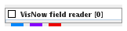
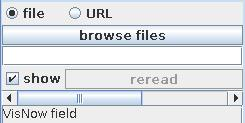
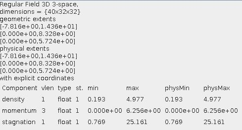

|
|
|

Reads VisNow Field (VNF) data files.
| input port | type | description | data acceptors |
|---|---|---|---|
| output port | type | description | data schemas |
| outField | VNRegularField | Regular Field |
|
| outObj | VNGeometryObject |
VISNOW FIELD READER
This module reads VisNow Field data files.
Output data
The output field is regular. A geometry object of the field.
Computation parameters

A radio button panel defines the source of the input data either from file or from URL.
To select an input file click the browse files button and select a file in the file browser or type the file name into the text input field below the button.
The show check box ....?
To reread the same input file select the reread button.
After reading in data from the input file there appears some basic information about the data:

Presentation parameters
Presentation tab contents are described in the common interfaces section unter the Presentation Panel entry.